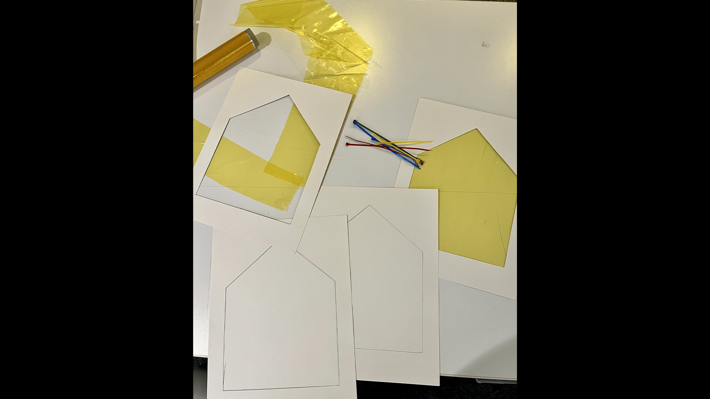
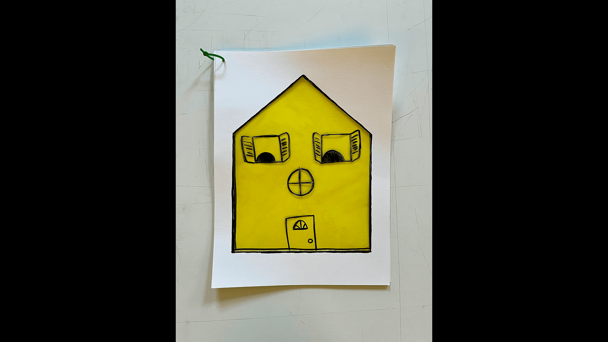
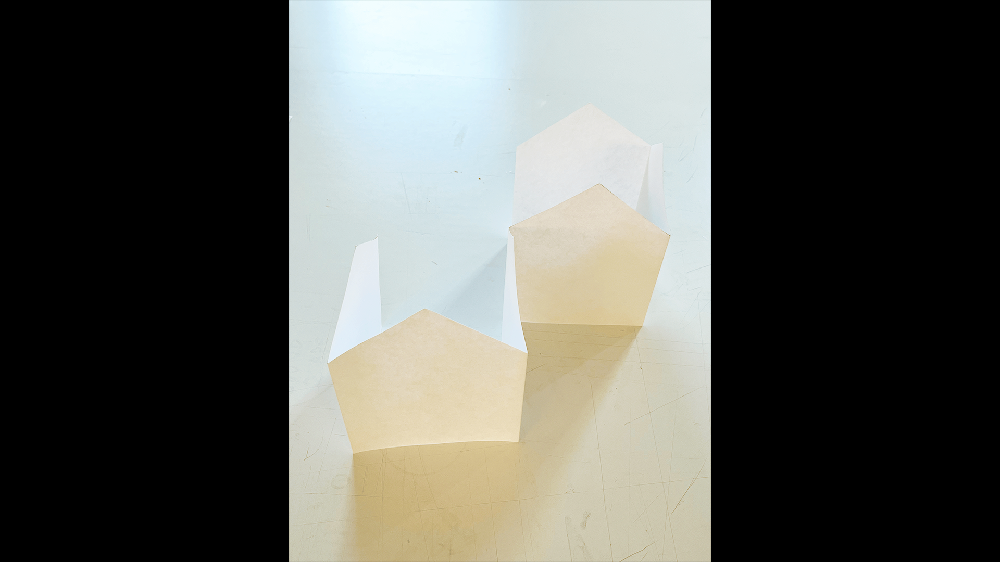
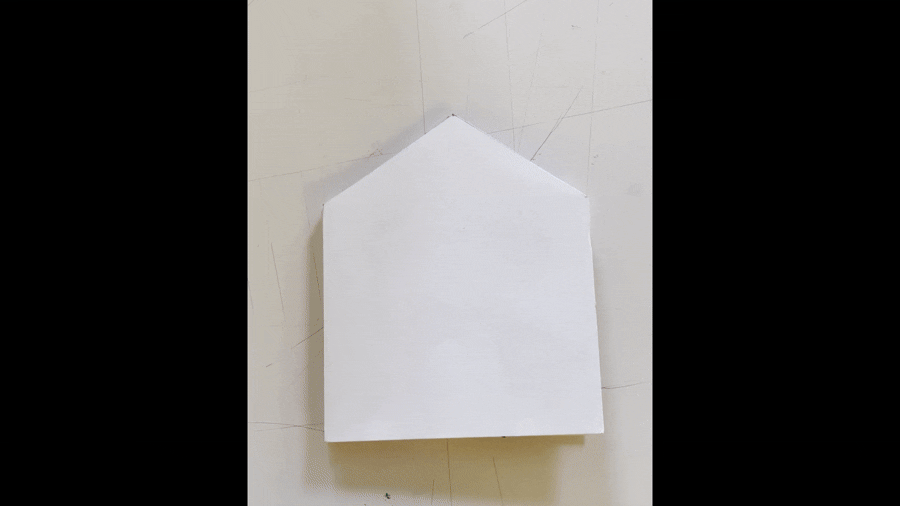
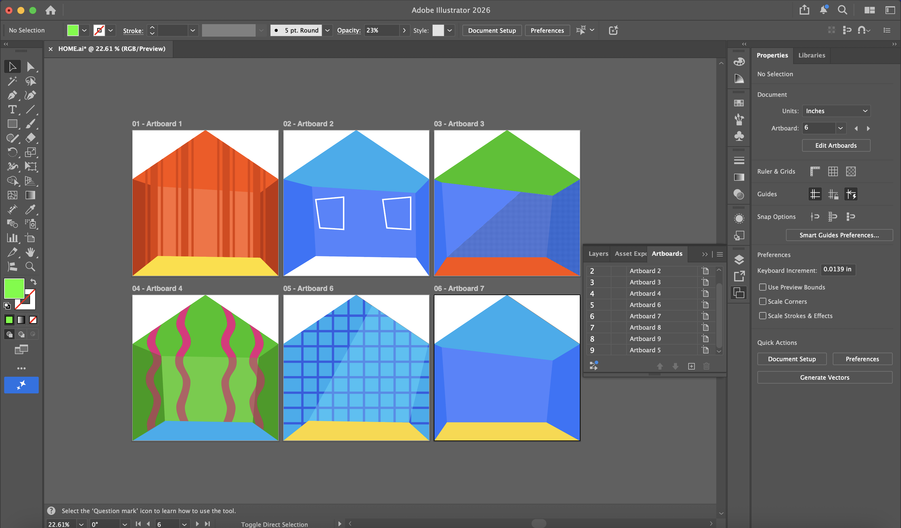
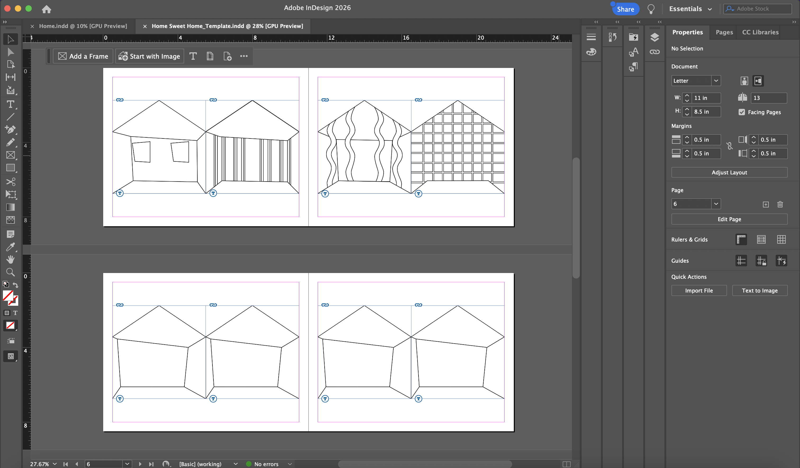
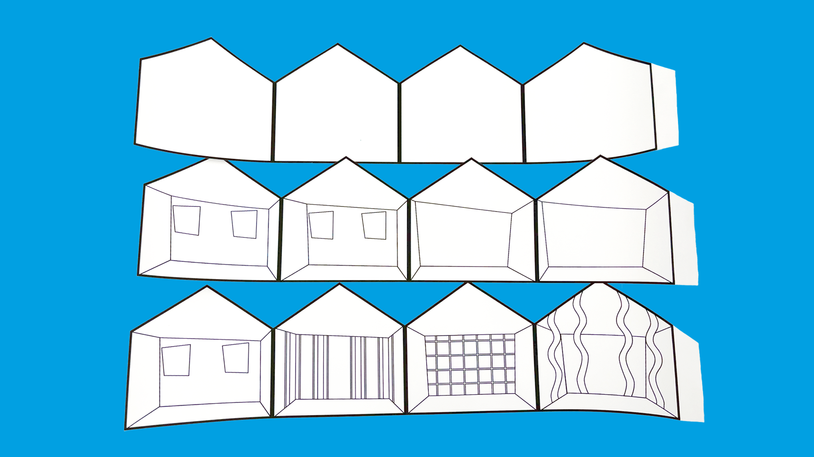
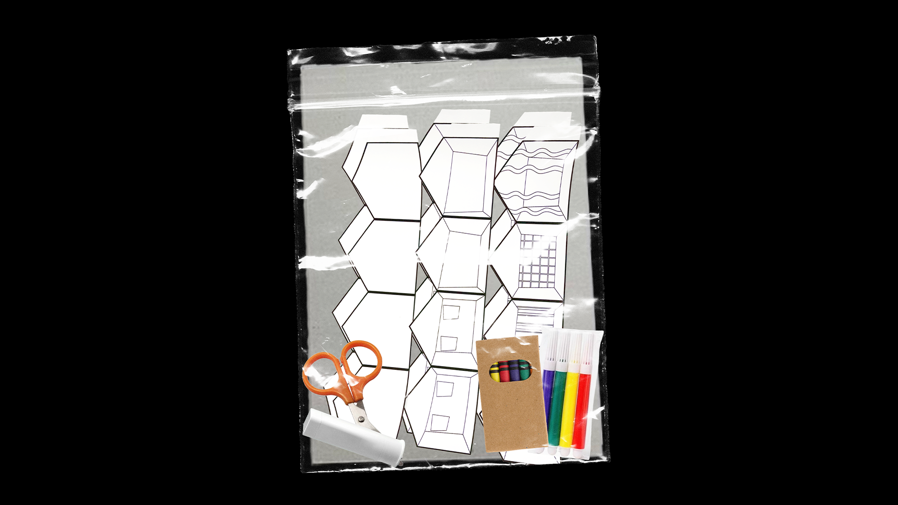
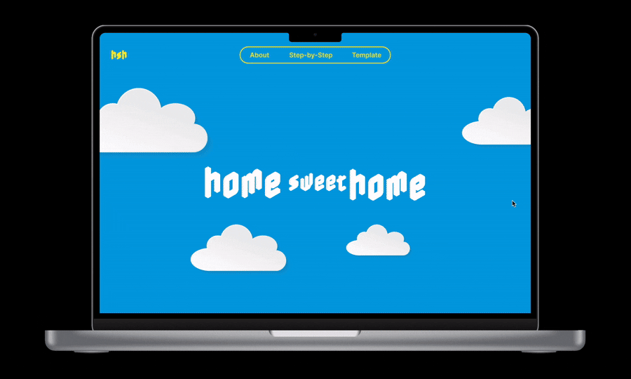

Project – Four
Final Project Documentation
May 11, 2026
May 11, 2026 | Monday
Concept Statement:
The concept of Home Sweet Home originated from an earlier exploration of the theme of
“collapse” and how it affects both physical and emotional systems. I knew that I wanted
to approach the theme of collapse through the lens of “home” and how it can serve as a
source of comfort and security, while also becoming a place of instability and uncertainty.
Rather than focusing on the physical structure of a home, I wanted to explore the emotional
and psychological aspects of what makes a home feel safe and welcoming for foster youth who
are forced to relocate to unfamiliar environments. I wanted to highlight the “collapse” of
home and how it can create feelings of insecurity and instability for foster youth, while
also emphasizing how these experiences can become moments of growth and adaptation.
Originating from my firsthand experience within the foster care system, Home Sweet Home
takes the form of a physical activity booklet designed for youth in temporary housing.
It functions as a toolkit for caregivers, helping children become acquainted with their
temporary homes and surroundings while breaking the ice and fostering a more welcoming environment.

Book References/Inspo: Books with Interactive Elements
Project Early Stages
In the early stages of the project, I experimented with styles and formats for the booklet,
exploring different ways to make it more interactive and engaging for foster youth I am designing for.
I have been considering materials and formats that are more tactile and visually appealing.
Aside from desiging the booklet, I have also spent time online and at museum stores researching a range of
children’s books,
analyzing how they use different materials and formats to create a more engaging experience
for the reader. Something I have noticed is that the books use vibrant colors, textures,
and interactive elements such as cut-out pages, pop-ups, pull-tabs, and openings within
the pages to create an immersive experience for the reader and children.

Prototype 1: "Home" (Interactive Booklet)

Prototype 1: "Home" (Booklet)
Prototype 1 was a simple booklet that I created to test the concept and format of the activity booklet.
It was designed to be interactive, with spaces for children to write and draw their thoughts
and feelings about home. In the iteration process of prototype 1, I felt the overall design
needed more engaging elements to capture the children's interest and felt too big in page size.
I wanted to make it more compact and portable, allowing it to move easily from home to home.
I also wanted to make it more visually appealing and engaging for children, incorporating colorful
illustrations.

Prototype 2: "Home" (Accordion Booklet/Structure)

Prototype 2: "Home" (Accordion Booklet/Iteration 1)
For Prototype 2, I wanted to incorporate the visual resemblance of a home, and in doing so,
I created an accordion-style booklet that closely resembles the shape of a house.
While reviewing the goals of the project, I aimed to make the activity booklet more
compact and portable. The accordion format allows the booklet to be easily folded and unfolded,
making it more convenient for both caregivers and children to use.
During the iteration process of Prototype 2, I felt that the overall design needed more engaging
elements to better capture children’s interest. I wanted to make it more visually appealing and
interactive by incorporating color and additional hands-on page elements.
Booklet Content Development
After creating the accordion booklet structure, I wanted to further develop the content
and design of the booklet. I translated the overall house-like shape and accordion structure
into what I felt was the most effective final design. I wanted to make the booklet more
visually appealing and engaging for children by incorporating colorful illustrations that
capture their attention and provide a playful visual experience.
The content is structured around a series of spaces for youth to engage with.
The illustrations closely resemble rooms within a home, such as a bedroom,
living room, or bathroom. Each space serves as a blank template that encourages
children to explore their environment and capture elements such as colors, shapes,
textures, and objects.

Prototype 3: "Home Sweet Home" (Interactive Spaces and illustrations)

Illustration Drafts for Accordion Booklet.
Prototype 3: "Home Sweet Home" (Concept & Ideation Progression)
In developing the booklet, I reflected on its purpose and how to make its design
accessible to both caregivers and children. Considering that foster youth and
caregivers often operate within limited financial means or unstable environments,
I decided that the project should exist both as a physical kit and as a digitally
accessible resource online.
I adjusted the layout and dimensions to make the booklet more compact and portable,
allowing it to move easily from home to home. I also revised the size so that it fits
on standard 8.5 × 11-inch paper, making it easier to print and share digitally.
While the booklet is intended to exist as a printed object, I have also been considering
how a digital format could expand accessibility for a wider audience.
A digital version could give users creative control over the content,
allowing them to add pages and adapt the booklet into their own evolving version,
while also inspiring collaboration among foster youth.

Illustrations for Accordion Booklet (color stripped).

Illustrations for Accordion Booklet (color stripped) 8.5 × 11-inch.

"Home Sweet Home" (cutout pages for accordion booklet prior to assembling).
Final Project: "Home Sweet Home" (Refined concept and design for accordion booklet)
For the final iteration of the project, I focused on refining both the concept and
design of the accordion booklet. I concentrated on making the booklet a template that
could be easily printed and assembled by children and caregivers. Accessibility was
a key consideration throughout the design process, as I wanted to ensure that the booklet
could be easily reproduced and shared among foster youth, caregivers, and the wider community.
The final iteration of the booklet functions as a kit that includes the printed booklet template,
assembly instructions, and access to a website featuring a digital version of the template that
can be downloaded and printed at home. This approach allows for creative control and adaptability,
enabling children to customize the booklet to their liking and make it their own.
The website also serves as a platform for sharing and collaboration, allowing foster youth
to connect with one another and share their experiences through the booklet.

"Home Sweet Home" (Booklet kit contents)

Website for Accordion Booklet template.
----